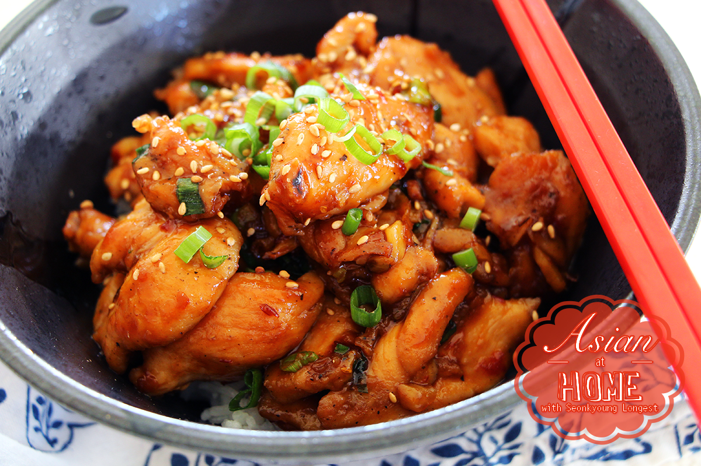

Orange Chicken

Description
An easy and healthy rendition of orange chicken that doesn't require deep frying! This recipe utilizes a Chinese chef secret weapon in order to keep the chicken breast from being dry. Low sugar, low carb, deliious!
Ingredients
- Boneless, skinless chicken breast
- Soy sauce
- Chinese cooking wine
- Cornstarch
- >Baking soda
- Black pepper
- Hoisin sauce
- Chili garlic sauce
- Sugar
- Juice from 1 orange
- Minced garlic
- Minced ginger
- Green onions
- Toasted sesame seeds
Steps
- Slice chicken into 1/4 inch thin. In a mixing bowl, add sliced chicken and rest of ingredients for chicken. Mix well with your hand, until chicken is coated evenly with sauce. Set aside.
- While chicken is marinate, let's make sauce and prepare vegetables. In another mixing bowl, combine all ingredients for sauce. Whisk until sugar has dissolved, set aside.
- Roughly chop garlic, julienne ginger and chop green onion, set aside.
- Heat a wok over high heat; add cooking oil and swirl to coat. Add chopped garlic and ginger, stir fry until you can smell the fragrance, about 30 seconds.
- Add marinated chicken into wok, combine with garlic and ginger. Spread chicken evenly bottom of work, and cook until it's golden brown and crispy, about a couple minutes. Turn it over, and cook other side for a couple minutes or until chicken is cooked 3/4 way.
- Add sauce we made earlier; stir fry until sauce has thicken, chicken is fully cooked and coated with sauce evenly, about a couple minutes. Stir frequently.
- Remove from heat, add chopped green onion, stir until combined.
- Transfer to a serving plate, garnish with more chopped green onion and sesame seeds.